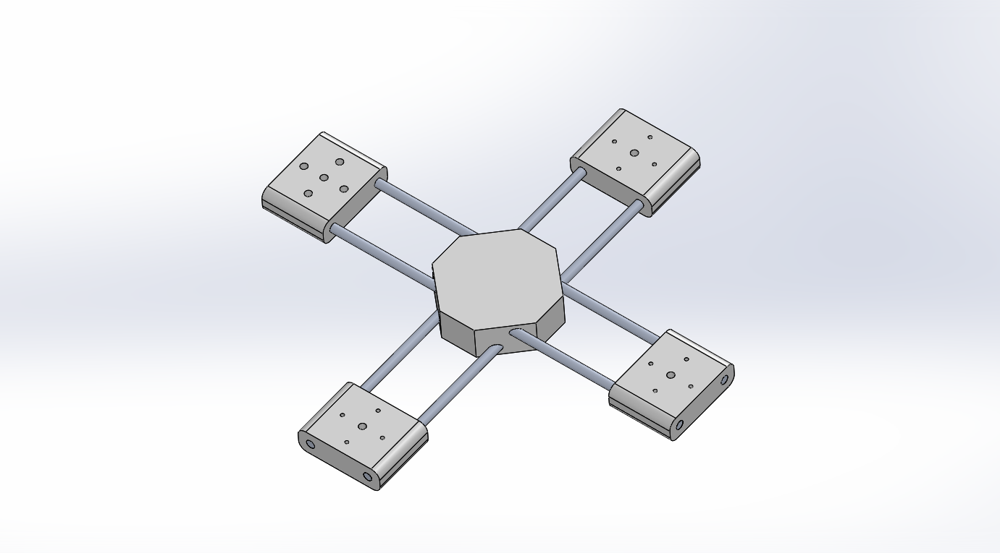
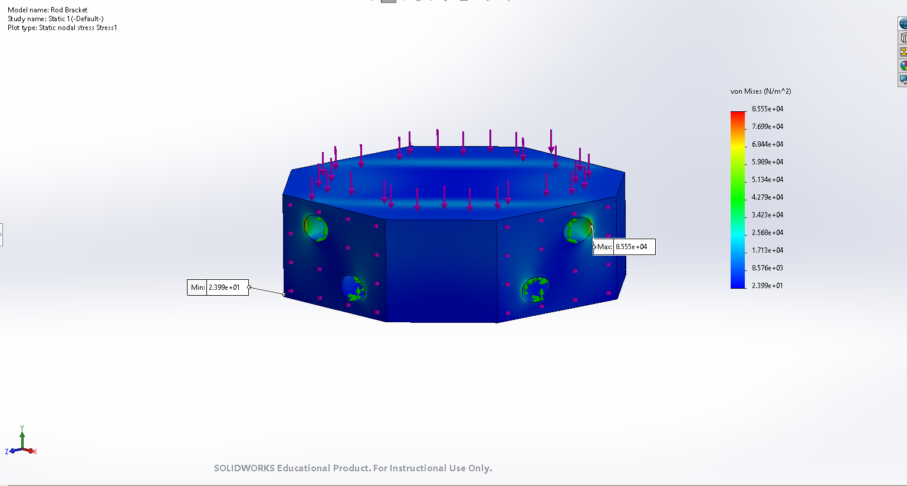
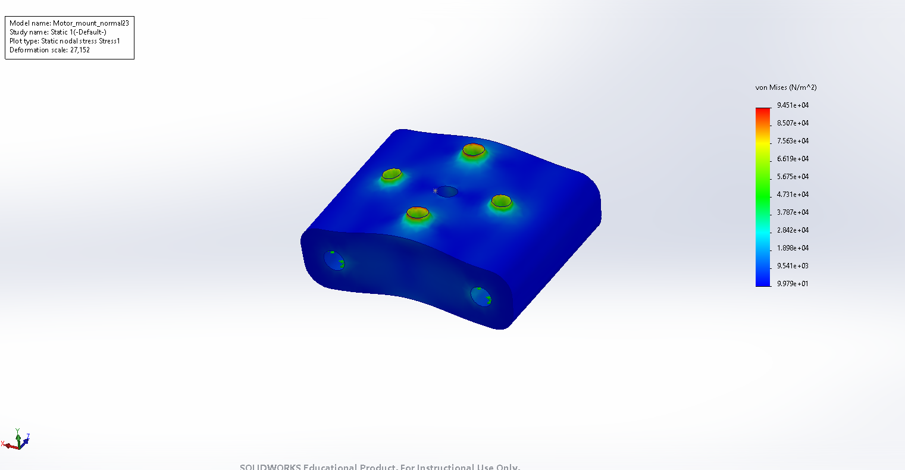
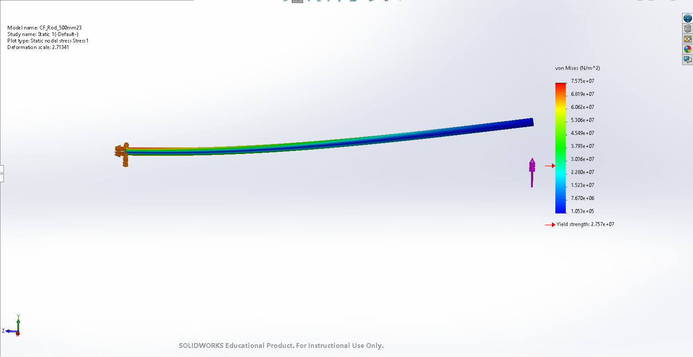

IEEE project · UC Merced · SolidWorks (CAD modeling + Simulation) · analytical hand calculations
I had the opportunity to take part in the early design stages of a quadcopter project for the IEEE club on campus, oriented around object model recognition. I used this opportunity to help design the 3D frame in SolidWorks and to validate the design under load through simulation testing.
The frame consists of three core structural components: the central hub (bracket), the arm rods, and the motor mounts assembled as shown below. To determine whether each component in the base would be sufficient, I tested each part separately under representative flight loads aimed at our project's use case.

Each part was analyzed under its governing load and validated with a 3g force to account for reaction forces and a mesh convergence study. The analysis identified the rod as the frame's weak point:
| Component | Load Case | Max von Mises | Result |
|---|---|---|---|
| Central Hub | 3g payload (88 N) | ~0.05 MPa | Safe |
| Motor Mount | Thrust (15 N) | ~0.10 MPa | Safe |
| Arm Rod | Tip bending (15 N) | ~76 MPa | Fails |
The rod yields at the hub joint. This result was confirmed independently with a beam-theory hand calculation (σ = Mc/I) that was similar to simulation analysis.
Carries the payload through its four arm joints. Under load it stayed far below yield with a large safety margin — not a structural concern.

Reacts the motor's thrust through its bolt pattern. Held up safely, with stress concentrated at the bolt holes and confirmed stable through mesh convergence.

Carries the bending load from motor thrust. This was the frame's weak point — it yielded at the hub joint, the failure confirmed by hand calculation within ~1% of the simulation.

The findings from this study led the project leads to research alternative rods better suited to the loads identified. Funding for the club's projects, including this one, was later halted in favor of other ongoing priorities.